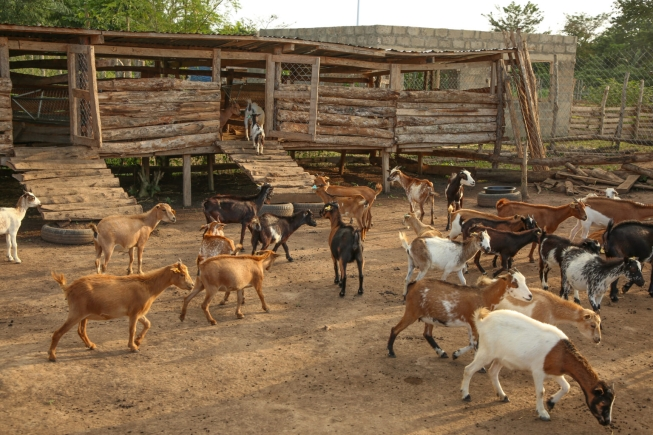
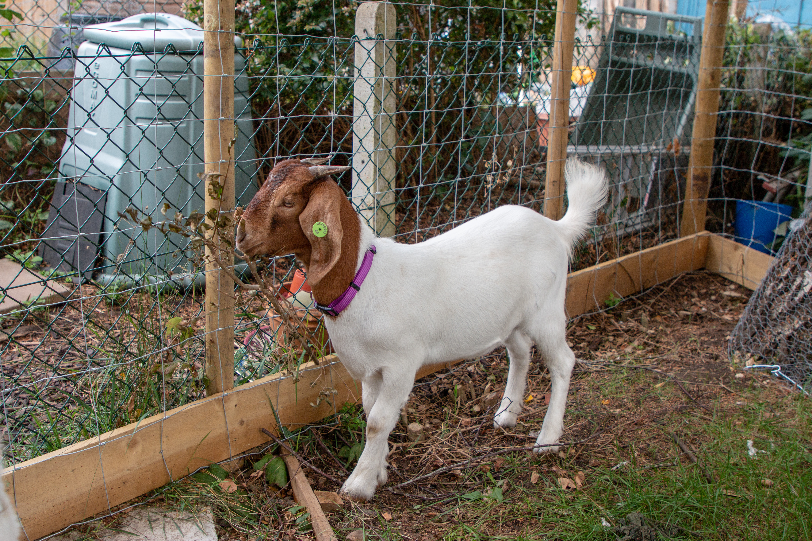
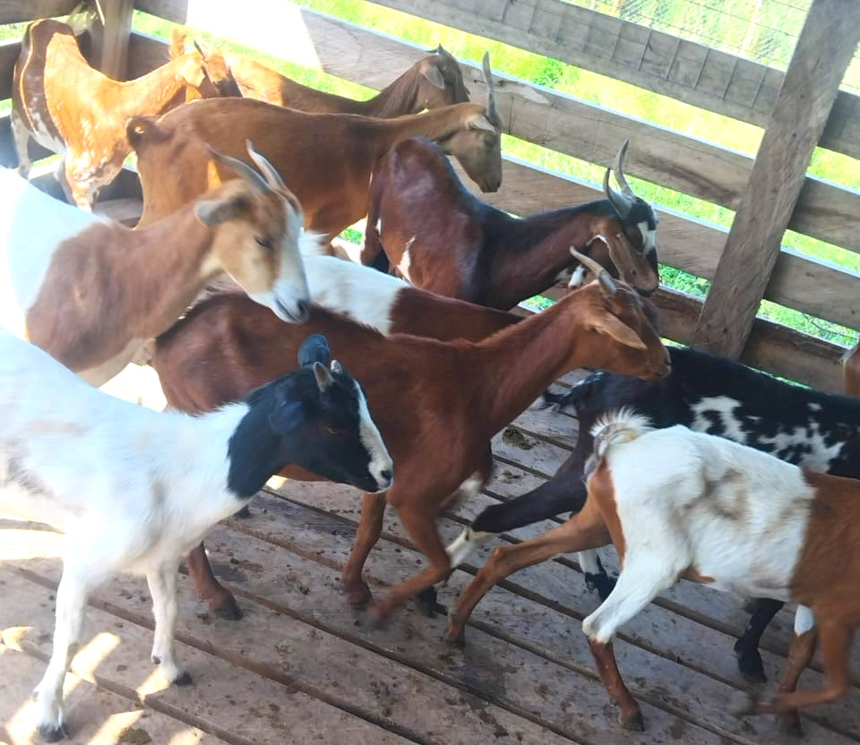
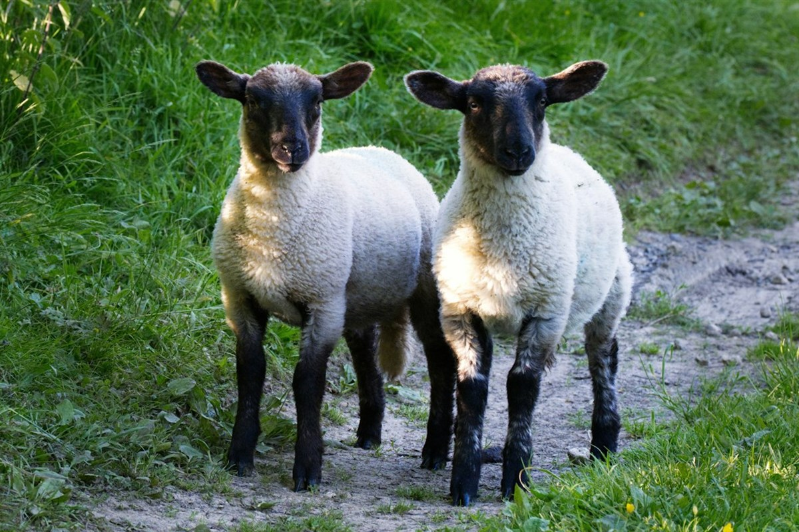
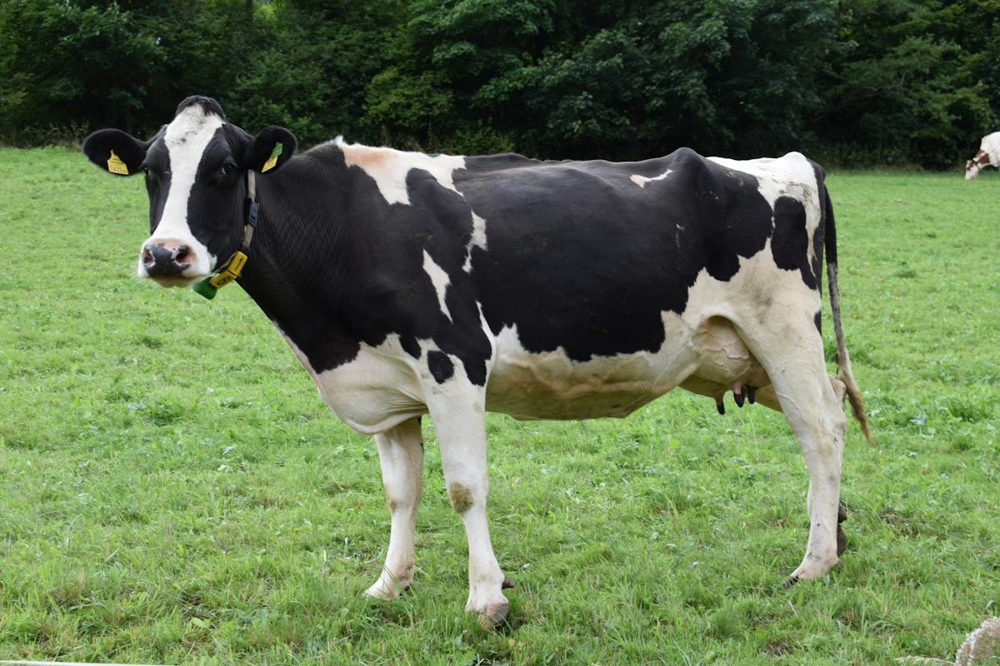

Multispecies Pasture Forage
100% natural, nutrient-dense legume fodder and rotational pastures formulated for thriving goat, sheep, and cattle herds.
From pedigreed Boer breeding goats and hardy Dorper sheep to pasture-raised cattle, multispecies rotational grazing, and state-of-the-art cold-chain meat & dairy processing across Ghana and West Africa.

100% natural, nutrient-dense legume fodder and rotational pastures formulated for thriving goat, sheep, and cattle herds.
Strict veterinary oversight, verified EV-GT, EV-SH, and EV-CT tag IDs, and complete lifecycle genetic tracking.
Hygienic processing of vacuum-packed chevon, mutton, and grass-fed beef cuts alongside fresh farm dairy.


Evolex Foods unites sustainable agricultural heritage with modern, disciplined farm systems. Built upon a structured operating roadmap, we verify every phase from livestock breeding and nutrition to cold-chain regional distribution.
Every goat is assigned a unique non-reusable ear tag ID, every feed ration is documented, and every processing batch is tracked for total food safety and commercial reliability.
Through disciplined veterinary supervision, pedigreed Boer breeding, and controlled hygienic processing, Evolex ensures consistency across the goat agribusiness value chain. We eliminate guesswork with verifiable records.
Our long-term roadmap expands from foundational herd breeding to downstream processing, dairy, premium packaged foods, and regional cold-storage distribution.

Comprehensive solutions spanning Boer goat breeding, Dorper sheep flocks, pasture cattle herds, meat & dairy processing, and cold-chain distribution.
Supplying modern farming equipment, durable fencing, automated watering systems, and veterinary tools built for tropical agriculture.
Modern elevated wooden slatted housing, optimal natural ventilation, automated watering systems, and predator-proof paddocks engineered for herd biosecurity.
High-protein legume forage, mineral supplement blocks, quality silage bales, and balanced daily rations engineered for optimal goat health and weight gain.
Comprehensive animal traceability from birth, unique lifetime ID tags, veterinary vaccination logs, and balanced nutritional rations.
Expert advisory in biosecurity protocols, soil testing, record audits, pasture rotation, and commercial feasibility planning.
Verifiable compliance with food hygiene, HACCP benchmarks, animal welfare standards, and wholesale commercial supply agreements.
We believe great food starts with integrity in the soil and respect for the animal. Every product in our supply chain reflects meticulous care, clean feeding, and disciplined logistics.
Pure, high-protein legume forage and balanced mineral rations with zero artificial growth hormones.
Purebred Boer goat bloodlines and disease-resilient breeding stock.
Modern farm management records and cold chain distribution.
Rigorous veterinary supervision and disease prevention routines.
Explore key operations powering Evolex Foods' integrated agricultural value chain.
Hygienic milking parlors, rapid chill vats, and strict microbiological testing for goat milk, cow dairy & artisan cheese.
View dairy processing
Traceable processing, precision cuts, vacuum packaging, and cold-chain distribution for retail & hospitality.
Explore cuts
High-welfare genetics, nutrient-dense forage rations, elevated hygienic slatted flooring, and verifiable ear-tag records.
See goat herd
Grass-fed cattle on managed rotational paddocks with verifiable EV-CT ear tags, sound veterinary screening, and high carcass yield.
Explore cattle
Resilient meat sheep breeds optimized for tropical climates, exceptional maternal instinct, fast weight gain, and EV-SH tracking.
Explore sheepReal photography from our commercial livestock pens and rotational pastures, showing veterinary care, raised slatted housing, healthy Dorper sheep, and grazing cattle herds.
Elevated wooden slatted floors prevent moisture accumulation, enhance ventilation, and maintain optimal hygiene for the goat herd.
Hardy hair sheep bloodlines requiring no shearing, offering high daily weight gain and thriving on natural tropical pastures.
Free-range grazing under disciplined rotational paddock systems, promoting natural herd behavior and lean, high-protein beef.

Standardized veterinary health schedules including vitamin dosing, oral parasite control, and daily vital sign audits across livestock.

Nutrient-dense grazing on natural grasses with access to balanced mineral licks, sheltered rest paddocks, and clean drinking water.

Individual electronic ear-tag and collar tracking ensuring complete pedigree, lactation cycle, and veterinary health accountability.
Trusted by commercial chefs, procurement managers, and institutional food buyers.
"Evolex Foods has transformed our supply reliability. Having verified records, consistent grade breeding stock, and premium fresh chevon has given our hospitality group unmatched confidence and quality."
"The traceability and biosecurity protocols Evolex enforces are unprecedented in the region. Their documented feed and animal IDs give wholesale buyers complete peace of mind."
We work with hotels, restaurants, supermarkets, and wholesale distributors across Ghana.